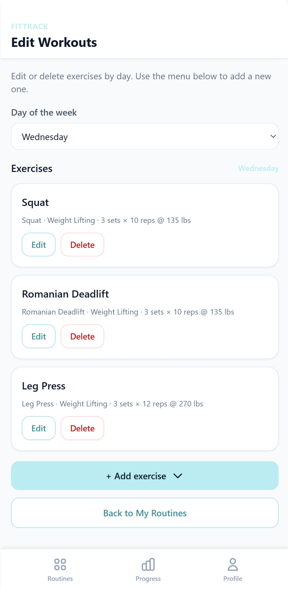
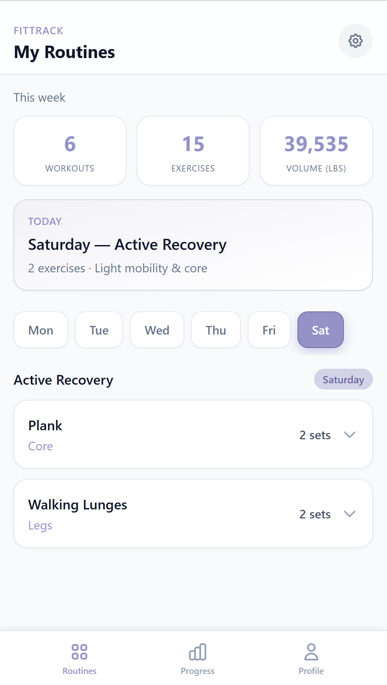
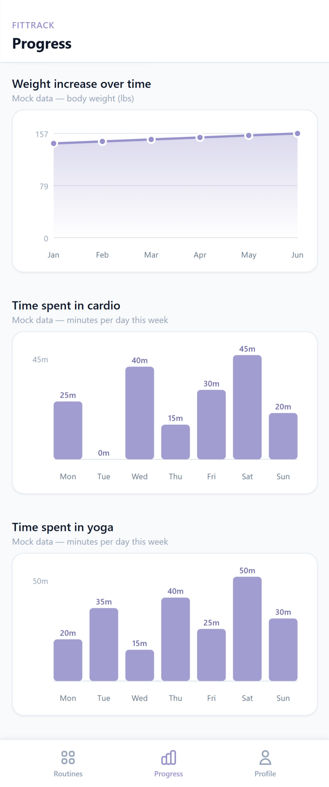
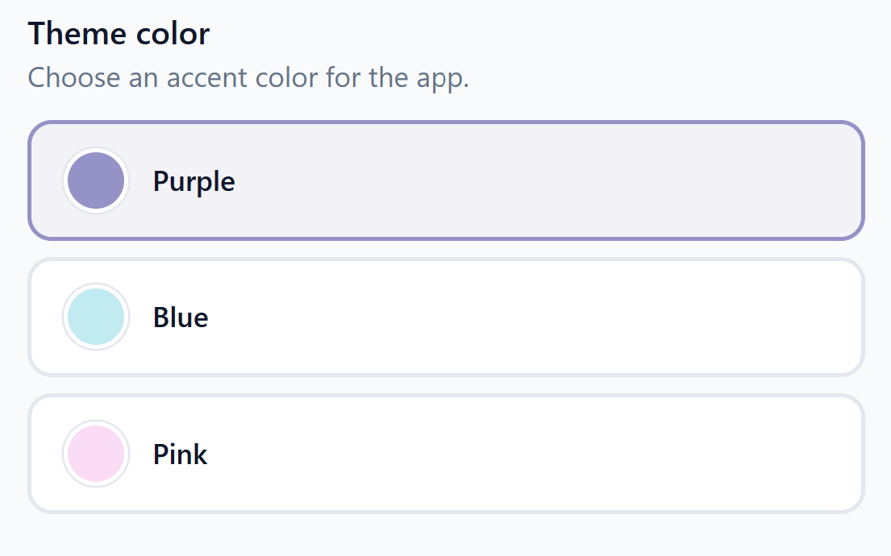
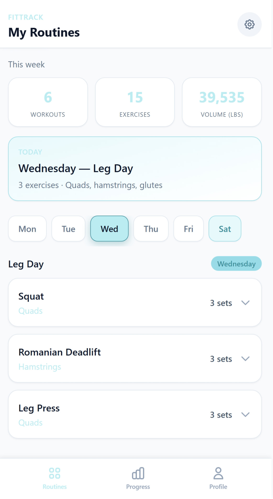
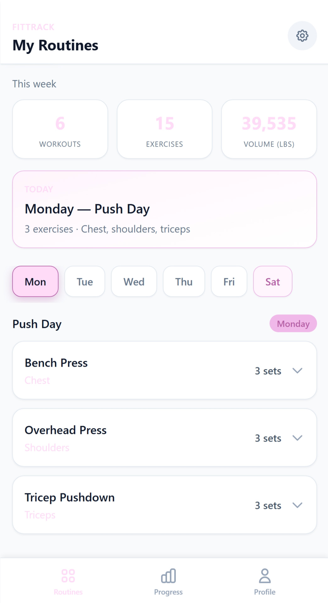

FitTrack_Photo1.jpg
Edit Workouts
Pick a day, review exercises with sets and reps, then edit or delete inline — or add a new movement.
A soft, card-based workout companion — weekly stats at a glance, day-by-day routines, editable exercise lists, progress charts, and personal accent themes.
Airy lavender cards on cool gray. Friendly radii, bold numbers, and a calm training rhythm.

Edit workouts by day, then switch to the progress tab for line and bar charts tracking body weight and activity.

Pick a day, review exercises with sets and reps, then edit or delete inline — or add a new movement.

Line chart for weight over months, bar charts for daily cardio and yoga minutes.
Three signature abilities — theme picker plus live previews of blue and pink accent themes applied across the full routine UI.
Choose Purple, Blue, or Pink as the app accent. The selected swatch gets a tinted background and border — then propagates to buttons, day pills, charts, and nav.

Leg Day on Wednesday with the sky-blue accent — stats cards, today banner, day selector, and exercise list all inherit the chosen palette instantly.

Push Day on Monday wearing the soft pink accent — same layout, different mood. Weekly volume stats and muscle-group labels shift to match.
